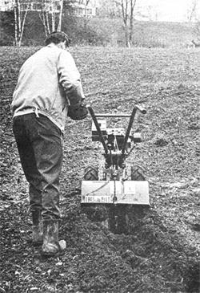
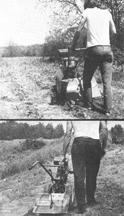
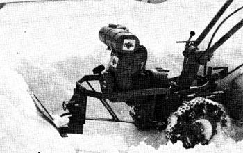

My wife and I bought an 85-acre Ozark hill farm a while back, and the first thing we did was to purchase a good tiller a heavy duty, six-horsepower Troy-Bilt with the power and ruggedness such a machine needs to stand up to the stony soil on our rockpile of a mountain. Once the tiller had finished its normal job of turning over the abandoned, weed-infested gsardens on our homestead, I began to try it on all sorts of other chores and found that it handled them extremely well. Some of those uses are rather unusual and might interest MOTHER's gardening friends.
First of all, there was the manure problem. We had inherited a whole barnful along with the farm and We wanted to move all that fertilizer out to our gardens. (That's right, gardens. Because of the rocky ground on our hilltop, we ended up with four patches each small but suitable for tilling and planting.) The barn, however, had been abandoned for several years and the contents were as dry and hard as wood. When I tried breaking up the layers with a pick, the point just bounced off the solid sheets.
Then I got a brainstorm. I moved the tiller into the barn, set it to cut fairly shallow and started the engine. It worked! The vigorous digging action broke the tough slabs of manure into small chunks which my wife and I shoveled onto a wheelbarrow and fed to our hungry soil. (Incidentally, this sort of tilling job isn't for the weak. I had to keep a strong hold on the handlebars and be ready to snap the machine out of gear quickly if it bounced into the side of the barn.)
After this success, I got brave and tried another experiment. The rabbits were eating the tips off my wife's pea plants and we wanted to fence off that section of the garden. We had lots of hedge (Osage orange) to use as posts, but there was just no way I could dig a hole in the hard-baked clay soil. No way, that is, until I had my bright idea. I placed the tiller where I wanted a posthole dug and left it out of gear, in free-roll position. I then set the depth regulator on the machine at its deepest position and let the tines scrabble away at the spot. The tiller very rapidly wallowed out the beginnings of a posthole through what seemed like millions of stones and saved me a great deal of hard shoveling. The trick worked so well, in fact, that I used it again later to excavate "basket-sized" holes for the 12 fruit trees my wife had ordered. (We'd made a bargain: I'd dig and she'd do the planting. Thanks to the tiller, my job turned out to be the easy one.)
The versatile tiller becomes even more so if you have a few accessories handy: One great addition is the furrowing attachment, which is generally used to cut rows for corn, tomatoes, potatoes, etc . but will also dig drainage and irrigation ditches, open up wet spots for more rapid drying and form compost trenches alongside crops.
In addition, the furrower can help you terrace a hillside garden. The makers of the Troy-Bilt advise tilling up and down a slope as a rule, rather than across. If you need to work in the other direction when terracing or cultivating, however, always begin at the top and overlap each newly tilled section with the uphill wheel in the soft, turned soil.
When I ordered the furrowing attachment for my tiller, I asked about other special applications for the machine. That's how I first heard of the accessory dozer blade a fine gadget for plowing snow or cleaning sawdust and manure out of chicken houses and barns. Troy-Bilt's Harvey Johnson said that his son had used the rototiller to help some neighbors build a swimming pool, alternately digging with the tines and shoving the dirt into place with the blade. The dozer attachment is also useful for light-duty grading or to back-fill foundation trenches.
Even if you never invest in any extras for your tiller, you'll still find plenty of jobs for it to do especially during the growing season, when it's an ideal cultivating tool. I find that most nurserymen set their plants so they can till in one direction, then turn and work across the rows at right angles. I'm going to try that next year with my cabbage, broccoli and cauliflower.
As the summer goes on, your rototiller can also help you keep back growth along fence lines (even in areas where the weeds are too rank for most power mowers). And even after harvest you'll still be getting out the trusty machine to plow under a green manure crop, or to turn and chop raw or dried materials into the ground in the late fall.
Come to think of it; the soil in my potato patch is so hard and rocky that my shovel bounces off like a butter knife. I wonder if a tiller can dig spuds!.
|
 |
 |
 |